Honey Token
Project walkthrough recorded on 7 September 2026, covering setup, deployment, document retrieval, event triage, Sentinel ingestion, and tests. Word and GitHub images are application captures. Azure images display saved API and query records, rather than the Azure portal. No teardown was performed.
Account details, email addresses, source IPs, tenant/subscription identifiers, callback tokens, and resource endpoints are redacted or excluded. Raw records remain outside this package.
Project walkthrough
- Purpose and architecture
- Starting state and baseline
- Infrastructure deployment
- Receiver security configuration
- Deployed receiver health
- Word renders the synthetic decoy
- Word callback and triage
- Persisted events and delivery outcomes
- Log Analytics ingestion
- Sentinel analytic rule
- Sentinel incident
- GitHub main CI status
- GitHub test job
- GitHub pytest log
- Local regression and SMTP delivery
- Secret scanning
- Limitations and teardown status
01. Purpose and architecture
Design summary | Source: ARCHITECTURE.md
Extended the local document-token receiver with Azure Table Storage and Sentinel ingestion. Word and cloud callbacks were exercised separately.
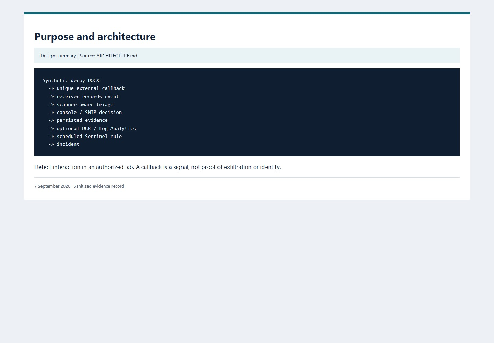
02. Starting state and baseline
Archived record, captured 2026-09-07 | Source: 00-azure-start-state.json + docs/BASELINE.md
Recorded the local SQLite starting point and nine passing baseline tests before adding the Azure adapters.
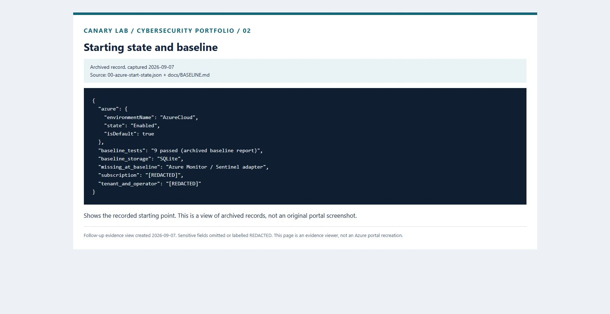
03. Infrastructure deployment
Archived Azure deployment response | Source: 03-bicep-final-deployment.json
Deployed the Bicep resources successfully. Resource identifiers and endpoint values are omitted from the saved response.
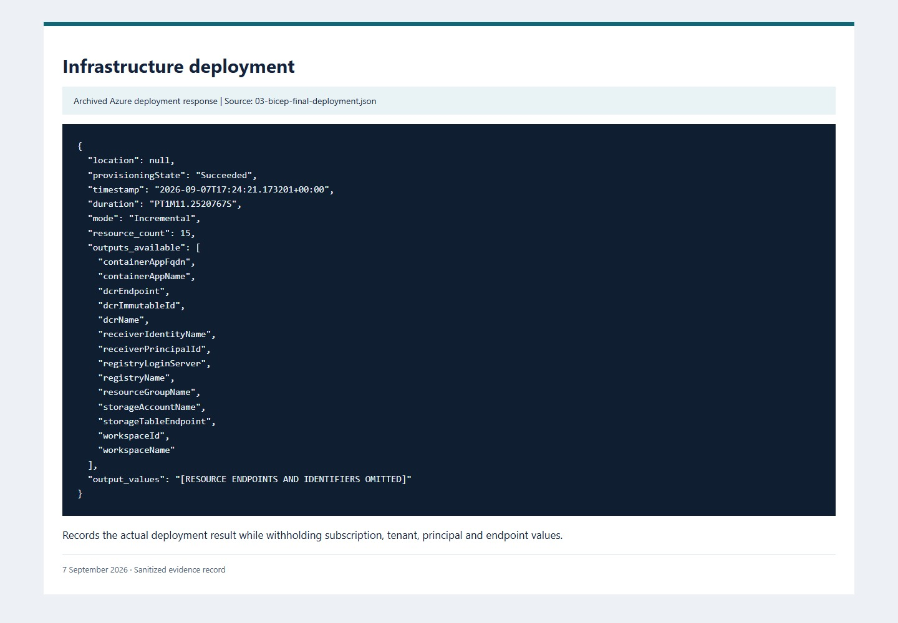
04. Receiver security configuration
Source configuration evidence | Source: infra/main.bicep
Disabled registry admin access and storage shared keys, required HTTPS, and disabled public management routes in the deployment configuration.
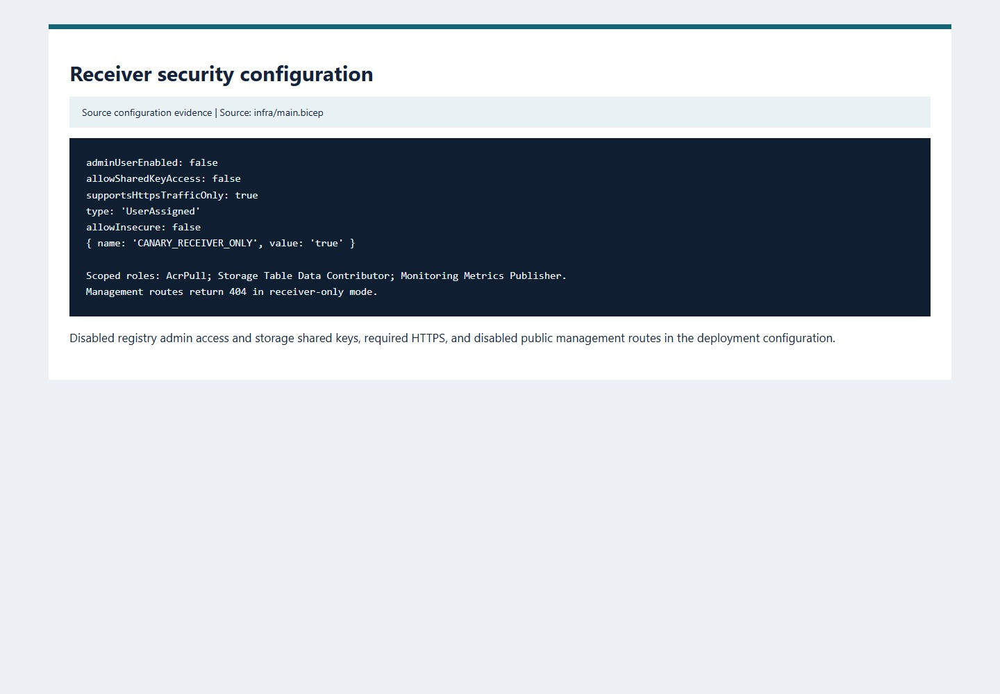
05. Deployed receiver health
Archived HTTP result | Source: 09-container-app-health.json
Requested the deployed health endpoint; it returned HTTP 200 with receiver-only mode and Azure Table Storage.
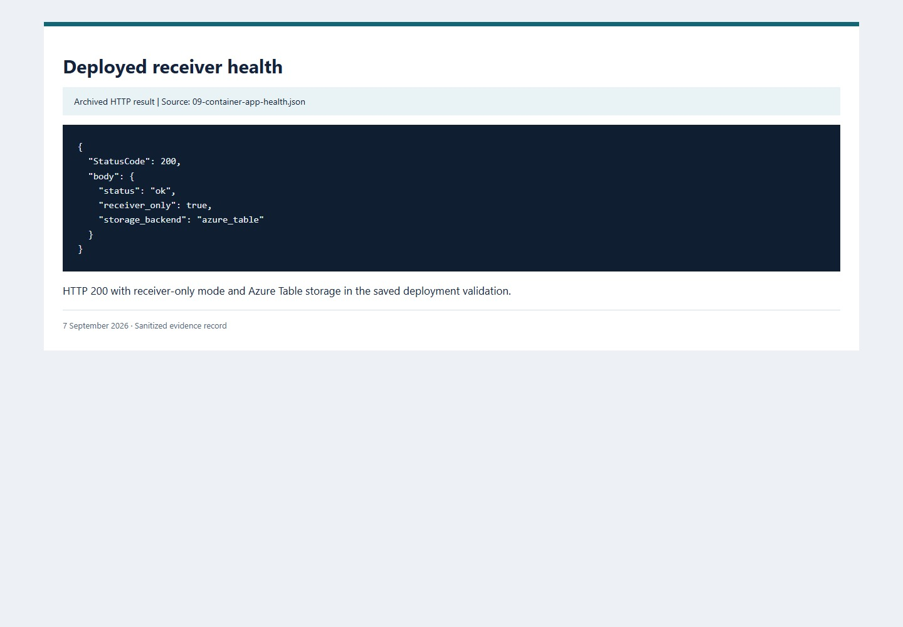
06. Word renders the synthetic decoy
Microsoft Word UI capture | Source: Word 16.0.20326.20132
Opened the generated synthetic document in Word. The local callback it produced is recorded in image 07.
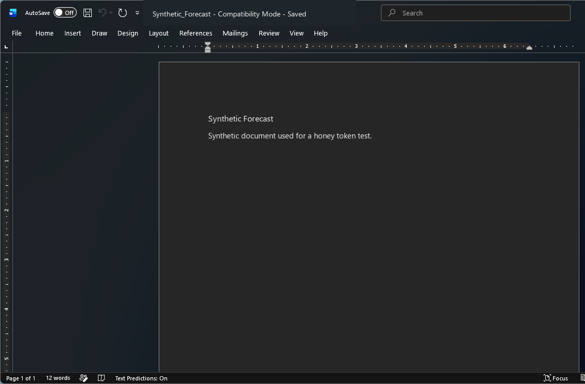
07. Word callback and triage
Archived event from observed Word open | Source: word-viewer-result.json
Captured the Office User-Agent and high-severity event when Word requested the loopback pixel.
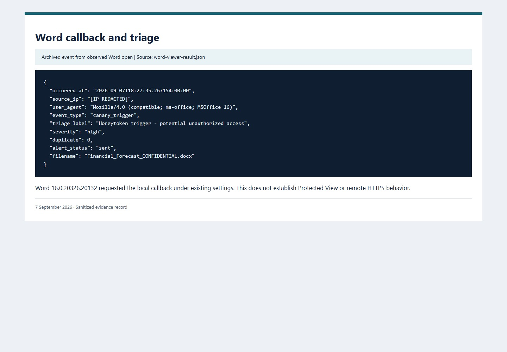
08. Persisted events and delivery outcomes
Archived Azure Table query | Source: table-events-sanitized.json
Queried stored events and retained both successful delivery outcomes and the first failed ingestion attempt.
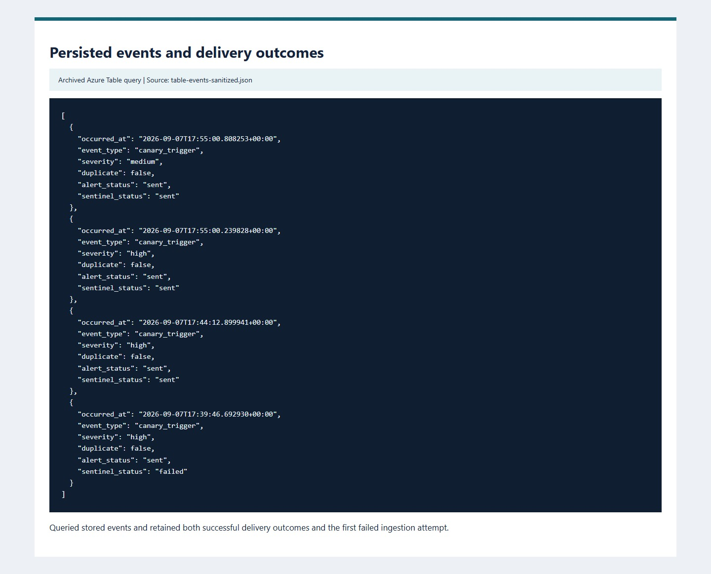
09. Log Analytics ingestion
Archived CanaryHit_CL query | Source: log-analytics-latest.json
Queried four ingested records, including a scanner classification and a suppressed repeat notification.
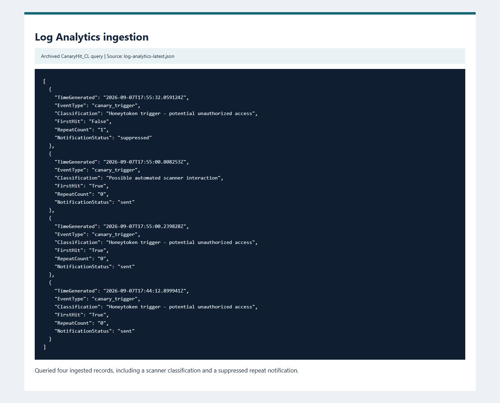
10. Sentinel analytic rule
Archived rule configuration | Source: sentinel-rule.json
Deployed a five-minute Sentinel rule with a ten-minute lookback and incident creation enabled. The query selected all callback rows; scanner and repeat rows were included.
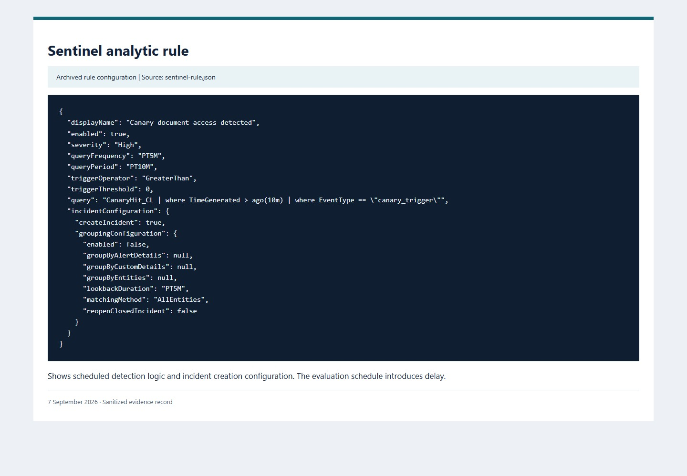
11. Sentinel incident
Archived Sentinel incident response | Source: sentinel-incidents.json
Recorded the resulting high-severity Sentinel incident. Account and resource identifiers are omitted.
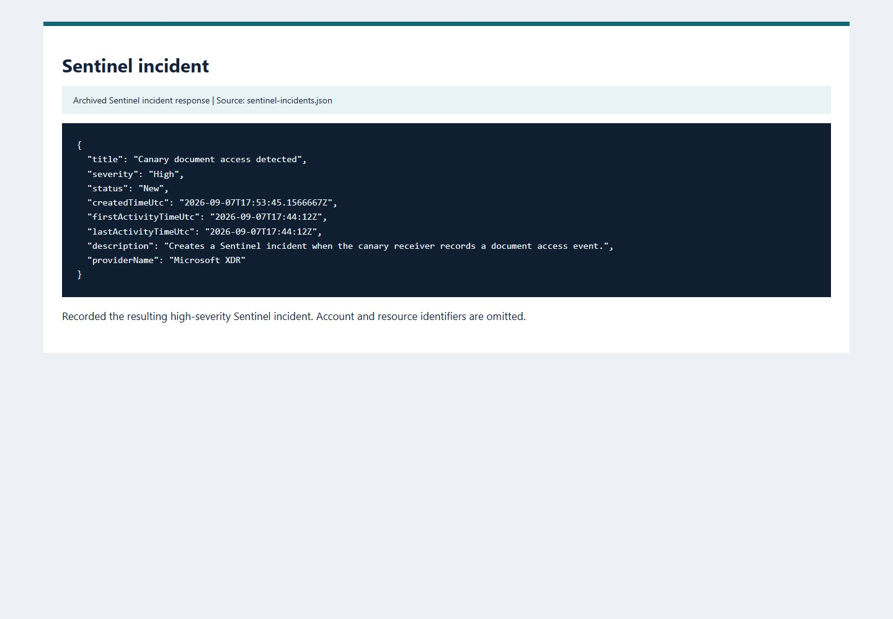
12. GitHub main CI status
GitHub UI capture | Source: Actions run 34152044446, commit 2858824
Captured the completed main-branch CI run after the application fixes.
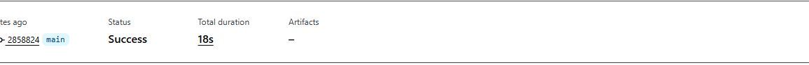
13. GitHub test job
GitHub UI capture | Source: Actions run 34152044446
Captured the successful test job in the same GitHub Actions run.
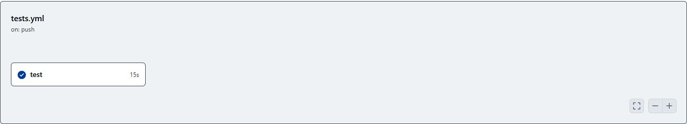
14. GitHub pytest log
GitHub UI capture | Source: Job 101836165394 in Actions run 34152044446
Captured the pytest output from the completed GitHub test job.
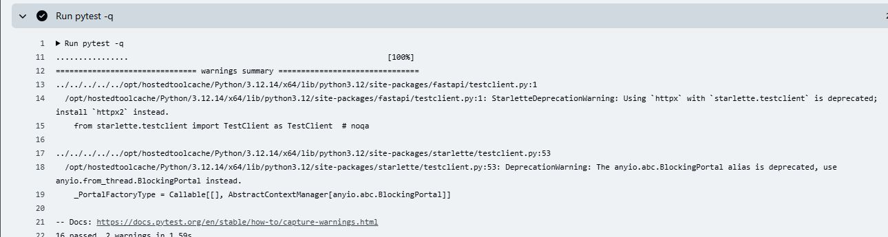
15. Local regression and SMTP delivery
Recorded test output | Source: portfolio/pytest.txt + tests/test_smtp_delivery.py
Ran the suite, including delivery to a local SMTP sink and the SMTP-failure regression. Sixteen tests passed.
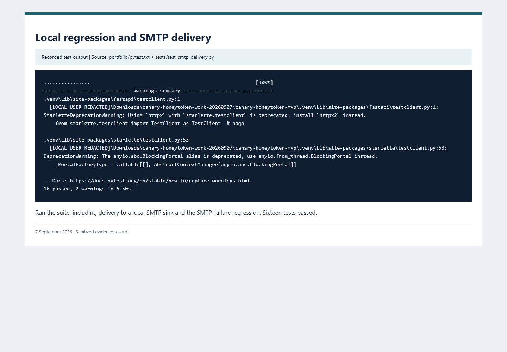
16. Secret scanning
Gitleaks output | Source: portfolio/gitleaks.txt
Scanned the tracked history with Gitleaks; the recorded scan found no secrets.
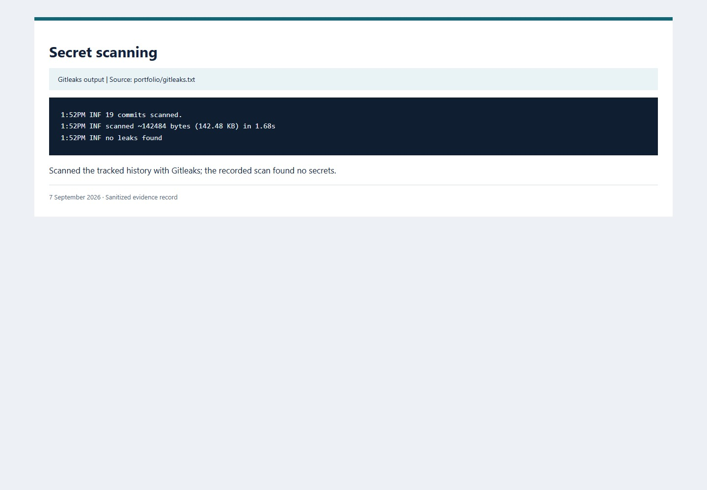
17. Limitations and teardown status
Operational notes | Source: LIMITATIONS.md + COST_AND_TEARDOWN.md
Recorded the resource state at the end of the run. The cleanup command and operational constraints are documented separately.
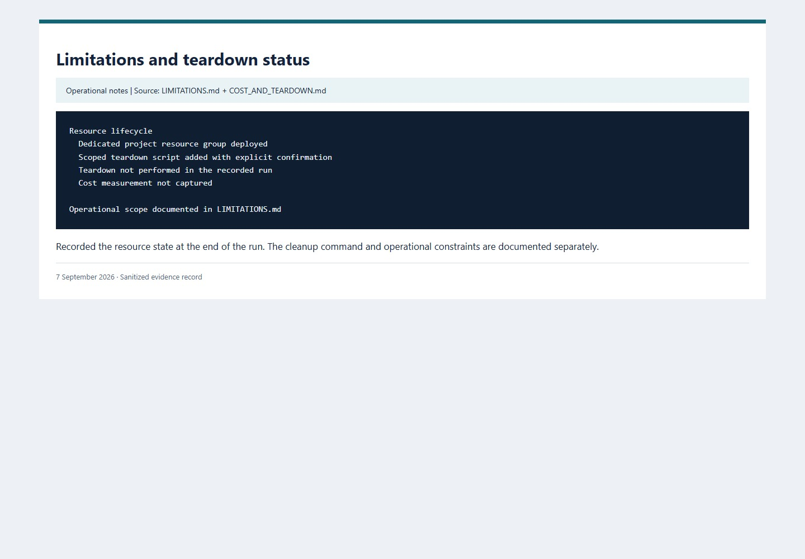